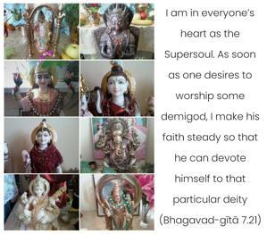
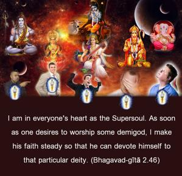

I am in everyone’s heart as the Supersoul. As soon as one desires to worship some demigod, I make his faith steady so that he can devote himself to that particular deity.


God has given independence to everyone; therefore, if a person desires to have material enjoyment and wants very sincerely to have such facilities from the material demigods, the Supreme Lord, as Supersoul in everyone’s heart, understands and gives facilities to such persons. As the supreme father of all living entities, He does not interfere with their independence, but gives all facilities so that they can fulfill their material desires. Some may ask why the all-powerful God gives facilities to the living entities for enjoying this material world and so lets them fall into the trap of the illusory energy. The answer is that if the Supreme Lord as Supersoul does not give such facilities, then there is no meaning to independence. Therefore He gives everyone full independence – whatever one likes – but His ultimate instruction we find in the Bhagavad-gītā: one should give up all other engagements and fully surrender unto Him. That will make man happy.
Both the living entity and the demigods are subordinate to the will of the Supreme Personality of Godhead; therefore the living entity cannot worship the demigod by his own desire, nor can the demigod bestow any benediction without the supreme will. As it is said, not a blade of grass moves without the will of the Supreme Personality of Godhead. Generally, persons who are distressed in the material world go to the demigods, as they are advised in the Vedic literature. A person wanting some particular thing may worship such and such a demigod. For example, a diseased person is recommended to worship the sun-god; a person wanting education may worship the goddess of learning, Sarasvatī; and a person wanting a beautiful wife may worship the goddess Umā, the wife of Lord Śiva. In this way there are recommendations in the śāstras (Vedic scriptures) for different modes of worship of different demigods. And because a particular living entity wants to enjoy a particular material facility, the Lord inspires him with a strong desire to achieve that benediction from that particular demigod, and so he successfully receives the benediction. The particular mode of the devotional attitude of the living entity toward a particular type of demigod is also arranged by the Supreme Lord. The demigods cannot infuse the living entities with such an affinity, but because He is the Supreme Lord, or the Supersoul who is present in the hearts of all living entities, Kṛṣṇa gives impetus to man to worship certain demigods. The demigods are actually different parts of the universal body of the Supreme Lord; therefore they have no independence. In the Vedic literature it is stated: “The Supreme Personality of Godhead as Supersoul is also present within the heart of the demigod; therefore He arranges through the demigod to fulfill the desire of the living entity. But both the demigod and the living entity are dependent on the supreme will. They are not independent.”